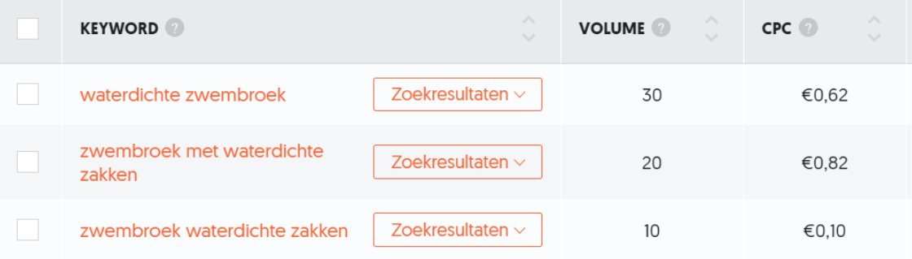

Het onderzoeken van zoekwoorden die relevant
zijn voor de lekker droog webshop, welke in
de content kunnen worden geïmplementeerd.
Aanpak
Om de vindbaarheid van de lekker droog webshop te vergroten in de
zoekmachines wilden we als groep SEO gaan inzetten. Om deze middelen op de juiste manier in te zetten heb ik
een zoekwoordanalyse uitgevoerd. In deze zoekwoordanalyse heb ik de zoekwoorden onderzocht die relevant zijn
voor de lekker droog waterdichte zwembroeken.
Brainstorm en concurrentie analyse
Als start heb ik een brainstorm uitgevoerd om te kijken op welke
onderwerpen lekker droog zicht focust droog en welke overkoepelende termen daarbij passen.
De keywords
De keywords waarop de concurrentie wordt gevonden en de termen die uit de
uitgevoerde brainstorm voor droog zijn gekomen ben ik gaan onderzoeken op zoekvolume en concurrentie.
Hiervoor heb ik de tool Ubersuggest en Google
zoekwoordplanner gebruikt.
Ik heb gezocht op zoekwoorden met de meeste volume waarin de waterdichte zwembroeken van lekker droog het
relevantst zijn. In de afbeelding hieronder zijn een aantal potentiele keywords ontstaan voor de droog
webshop waarin de USP sterk naar voren komt.

Wat opviel uit het onderzoek en zoals ook in bovenstaande afbeelding is
te zien is dat er weinig zoekvolume voor deze woorden is. Het zoekvolume is echter gemiddeld over een
jaar genomen. Als je naar de trends van het zoekvolume kijkt blijkt dat dit cijfer in de zomermaanden
uitkomt op een piek van 110 maandelijkse zoekresultaten en buiten het seizoen amper op wordt gezocht.
Bovenstaande zoekvolumes zijn helaas dus niet heel erg hoog daarom ben ik
op zoek gegaan naar zoekwoorden die ook relevant zijn voor lekker droog. Hiervoor heb ik bijvoorbeeld
gekeken naar zoekwoorden die het probleem omvatten of long-tail zoekwoorden "Waar laat ik mijn spullen op
het strand?" of "Hoe kan ik mijn waardevolle eigendommen beveiligen tijdens het zwemmen".
Conclusie
Uiteindelijk heb ik in Google
zoekwoordplanner een zoekwoordplan
opgesteld voor droog. In deze zoekwoordplanner staan de zoekwoorden die Lekker droog gaat inzetten voor
zoekmachineoptimalisatie gebaseerd op de in vorige hoofdstukken verzamelde informatie. Uit het onderzoek
kwamen geen hele hoge zoekwoorden met zoekvolume wat jammer is voor het schrijven van de teksten.
Reflectie
Het was de eerste keer dat ik een zoekwoordonderzoek heb uitgevoerd. Ik
heb daardoor ook kennis gemaakt met voor mij nieuwe tools zoals "Google zoekwoordplanner" en "Ubersuggest".
Ik vond het door middel van deze tools interessant om bijvoorbeeld de cpc of het zoekvolume van een
zoekwoord te bestuderen, aangezien ik van te voren eigenlijk niet eens wist dat deze data aan (zoek)woorden
was gekoppeld.
De volgende stap is om deze opgedane informatie over de zoekwoorden te verwerken in de content voor de
lekker droog webshop.